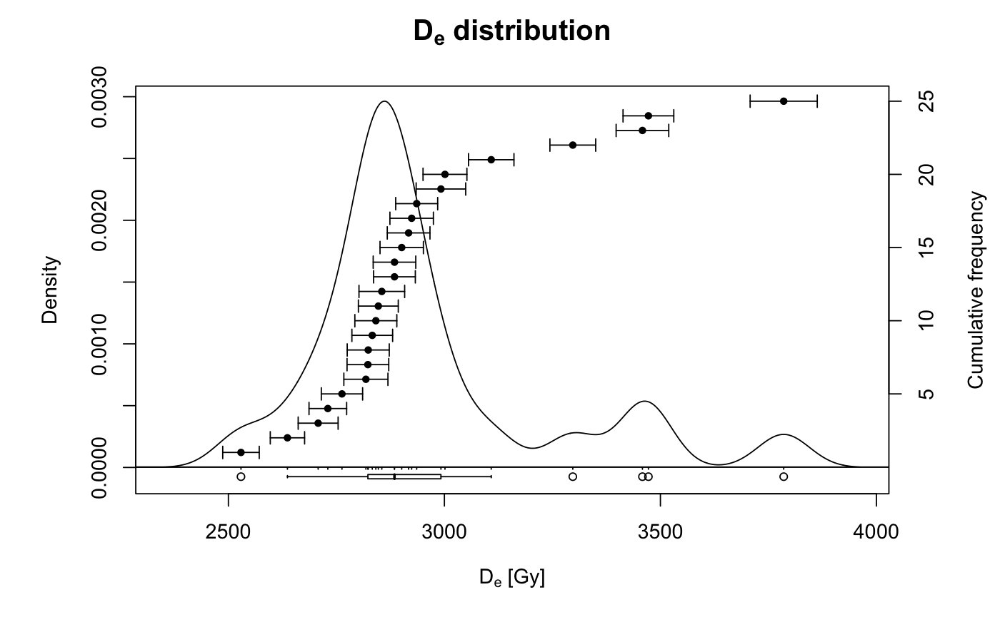

This function calculates a number of descriptive statistics for estimates with a given standard error (SE), most fundamentally using error-weighted approaches.
calc_Statistics(data, weight.calc = "square", digits = NULL, n.MCM = NULL, na.rm = TRUE)
| data | data.frame or RLum.Results object (required):
for data.frame two columns: De ( |
|---|---|
| weight.calc | character:
type of weight calculation. One out of |
| digits | integer (with default):
round numbers to the specified digits.
If digits is set to |
| n.MCM | numeric (with default):
number of samples drawn for Monte Carlo-based statistics.
|
| na.rm | logical (with default):
indicating whether |
Returns a list with weighted and unweighted statistic measures.
The option to use Monte Carlo Methods (n.MCM) allows calculating
all descriptive statistics based on random values. The distribution of these
random values is based on the Normal distribution with De values as
means and De_error values as one standard deviation. Increasing the
number of MCM-samples linearly increases computation time. On a Lenovo X230
machine evaluation of 25 Aliquots with n.MCM = 1000 takes 0.01 s, with
n = 100000, ca. 1.65 s. It might be useful to work with logarithms of these
values. See Dietze et al. (2016, Quaternary Geochronology) and the function
plot_AbanicoPlot for details.
0.1.7 (2017-09-02 23:27:02)
Dietze, M. (2018). calc_Statistics(): Function to calculate statistic measures. Function version 0.1.7. In: Kreutzer, S., Burow, C., Dietze, M., Fuchs, M.C., Schmidt, C., Fischer, M., Friedrich, J. (2018). Luminescence: Comprehensive Luminescence Dating Data Analysis. R package version 0.8.0. https://CRAN.R-project.org/package=Luminescence
## load example data data(ExampleData.DeValues, envir = environment()) ## show a rough plot of the data to illustrate the non-normal distribution plot_KDE(ExampleData.DeValues$BT998)## calculate statistics and show output str(calc_Statistics(ExampleData.DeValues$BT998))#> List of 3 #> $ weighted :List of 9 #> ..$ n : int 25 #> ..$ mean : num 2896 #> ..$ median : num 2884 #> ..$ sd.abs : num 240 #> ..$ sd.rel : num 8.29 #> ..$ se.abs : num 48 #> ..$ se.rel : num 1.66 #> ..$ skewness: num 1.34 #> ..$ kurtosis: num 4.39 #> $ unweighted:List of 9 #> ..$ n : int 25 #> ..$ mean : num 2951 #> ..$ median : num 2884 #> ..$ sd.abs : num 282 #> ..$ sd.rel : num 9.54 #> ..$ se.abs : num 56.3 #> ..$ se.rel : num 1.91 #> ..$ skewness: num 1.34 #> ..$ kurtosis: num 4.39 #> $ MCM :List of 9 #> ..$ n : int 25 #> ..$ mean : num 2951 #> ..$ median : num 2884 #> ..$ sd.abs : num 282 #> ..$ sd.rel : num 9.54 #> ..$ se.abs : num 56.3 #> ..$ se.rel : num 1.91 #> ..$ skewness: num 1.34 #> ..$ kurtosis: num 4.39# NOT RUN { ## now the same for 10000 normal distributed random numbers with equal errors x <- as.data.frame(cbind(rnorm(n = 10^5, mean = 0, sd = 1), rep(0.001, 10^5))) ## note the congruent results for weighted and unweighted measures str(calc_Statistics(x)) # }